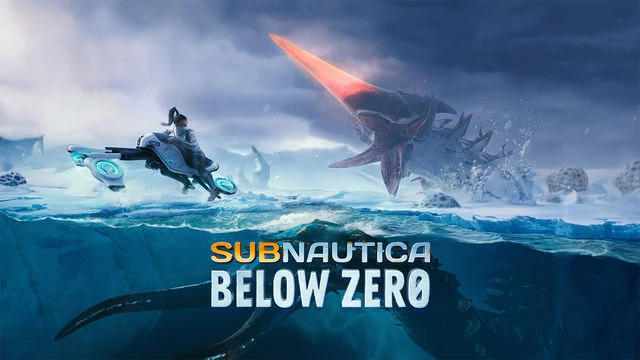

subnautica below zero
Subnautica: Below Zero — это приключенческая видеоигра на выживание в открытом мире, разработанная и изданная компанией Unknown Worlds Entertainment . Игра является продолжением Subnautica . Представленная в раннем доступе через Steam и Epic Games Store в январе 2019 года, Subnautica: Below Zero была выпущена для macOS , Nintendo Switch , PlayStation 4 , PlayStation 5 , Windows , Xbox One и Xbox Series X/S 14 мая 2021 года. Физические версии игры были изданы Bandai Namco Entertainment . Он получил в целом положительные отзывы критиков. Геймплей Subnautica: Below Zero — это приключенческая игра на выживание , действие которой разворачивается в открытом мире и ведется от первого лица . Игрок управляет ксенологом Робин Айю, которая приземляется на океанскую планету 4546B в поисках ответов об исчезновении своей сестры. Как и в его предшественнике, игровой процесс включает в себя исследование и выживание в инопланетной среде, а также выполнение задач для продвижения сюжета игры. Игроки собирают ресурсы, конструируют инструменты, строят базы и подводные лодки , а также взаимодействуют с дикой природой планеты. Чтобы выжить и прогрессировать, игрок должен собирать сырье из окружающей среды, в том числе различные минералы, образцы флоры и рыбу, избегая или противодействуя таким угрозам, как враждебная фауна и ослепляющие снежные бури. Они также должны приобретать чертежи для создания новых предметов, либо находя и открывая ящики с данными в мире, либо сканируя фрагменты предмета. Как правило, по мере продвижения игроку приходится сталкиваться с более суровыми условиями, требуя лучшего оборудования или обновлений для старого, например, костюмов, устойчивых к холоду, кислородных баллонов большей емкости или транспортных средств, способных противостоять более глубоким водам. Действие игры в основном происходит под водой, но, в отличие от ее предшественницы, здесь есть гораздо более обширные и опасные наземные территории для исследования. Есть структуры и затонувшие корабли, которые можно найти как над землей, так и под водой, которые служат ключевыми местами для истории, предоставляя чертежи и записи разговоров, которые постепенно раскрывают знания. Помимо возвращенных механик, таких как кислород, голод и жажда, у игроков теперь есть датчик температуры тела, который вступает в действие при ходьбе по суше. Он работает так же, как датчик кислорода под водой. Игрок будет постепенно терять тепло тела и замерзать, если он не восполнит тепло своего тела, прыгнув в воду, найдя укрытие, съев определенные предметы или встав рядом с источником тепла. При начале новой игры игроки должны выбрать режим сложности из следующих пяти: Выживание. Игрок должен управлять здоровьем, голодом, жаждой, кислородом и температурой. После смерти они возрождаются, но некоторые предметы теряются из их инвентаря. Это «стандартный» игровой режим. Свобода — как выживание, но без голода и жажды. Хардкор — режим выживания с постоянной смертью . Если игрок умирает, он не возродится , а его файл сохранения будет удален. Креативность — здоровье, голод, жажда, кислород и температура отключены, все чертежи для крафта доступны в начале, и для крафта не требуется никаких ресурсов. Кроме того, в комплект входят подводные аппараты, Seaglide, отсек для мобильных транспортных средств, нож, фонарик, строитель среды обитания, сканер и двигательная пушка. Им не нужен источник энергии, и их нельзя повредить (если только игрок не повредит их намеренно). Пользовательский — для настройки игры предоставляются различные параметры, такие как погода, продолжительность дня и ночи, скорость появления существ, агрессия и т. д. Сюжет Через два года после событий оригинальной игры корпорация Альтерра, которая изначально разбила « Аврору» на планете 4546B, построила на планете ряд баз для исследования бактерии Хараа и расы-предшественников инопланетян, получивших название «Архитекторы», которые изучали бактерия предшествующая. Ксенолог Робин Айю тайно проникает на планету в замороженном секторе под названием «Сектор Ноль», чтобы расследовать обстоятельства смерти своей сестры Сэм, которая, как утверждает Альтерра, стала результатом «халатности сотрудников». В прошлом году Альтерра недавно отозвала весь свой персонал, дав Робину возможность приземлиться на планете. Вскоре после приземления Робин улавливает сигнал бедствия и отправляется его исследовать, обнаруживая инопланетное убежище, содержащее оцифрованное сознание живого Архитектора. Отчаянно нуждаясь в новом носителе данных, поскольку энергия святилища на исходе, и после очевидного недоразумения Архитектор загружается в мозг Робина. Разгневанная тем, что он вторгся в ее разум, Робин сначала пытается игнорировать это, но вскоре соглашается помочь ему, теперь представленному как Ал-Ан, построить новое тело для перехода в него. Для этого Робин прочесывает сектор на предмет инопланетных установок и артефактов в поисках необходимых компонентов и материалов. Ал-Ан объясняет, что раньше он не пытался обратиться к Альтерре за помощью, потому что считал, что мотивы Альтерры не совпадают с ее собственными, и не хотел рисковать, чтобы они нашли путь к ее родному миру. Во время поисков Ал-Ан намекает, что он причастен к вспышке болезни Хараа. Тем временем Робин также продолжает расследование смерти Сэма. Она несколько раз встречает Маргерит Майду, выжившую в Дегаси, которая сначала с подозрением относится к Робину, но раскрывает свою часть истории в обмен на отключение наблюдения Альтерры за сектором. Робин обыскивает заброшенные объекты Альтерры и узнает, что Альтерра обнаружила замороженный во льду труп левиафана, который все еще был заражен Хараа. Однако вместо того, чтобы уничтожить Хараа, Альтерра решила исследовать бактерию на предмет ее полезного применения. Опасаясь новой вспышки и опасаясь, что Альтерра будет использовать Хараа для разработки биологического оружия, Сэм решил саботировать проект. При поддержке и помощи Маргариты она синтезировала и спрятала лекарство от Хараа, затем использовала взрывчатку, чтобы разрушить пещеру, в которой находился левиафан, в то время как Маргарит разрушила лабораторию, в которой хранились образцы Альтерры Хараа. Однако Сэм случайно попал под взрыв и погиб в результате падения обломков. Не сумев определить причину обвала, Альтерра списала смерть Саманты на халатность. Используя эти знания, а также некоторые карты и подсказки, Робин находит тайник с противоядием Хараа, которое сделал Сэм, и использует его, чтобы нейтрализовать Хараа, заразившую замороженного левиафана, завершая дела своей сестры и не позволяя Альтерре продолжить свой проект. Наряду с этим Робин в конечном итоге может восстановить все компоненты, необходимые для создания нового тела Ал-Ан, и изготовить его на инопланетном объекте. Переместившись в тело, Ал-Ан показывает, что он был одним из ведущих ученых, исследующих лекарство от бактерии Хараа; он не подчинился приказу, пытаясь высидеть яйца левиафана Морского Дракона, в результате чего Морские Драконы разрушили исследовательский центр, а Хараа выпустили на 4546B. Ал-Ан решает вернуться на свой родной мир, чтобы своими глазами увидеть, что случилось с другими Архитекторами, а также искупить свои прошлые ошибки. Он активирует фазовые врата Архитектора, и Робин соглашается покинуть с ними 4546B, не зная, что они там найдут. Развитие Subnautica: Below Zero изначально задумывалась как пакет загружаемого контента (DLC) для оригинальной Subnautica (2018), хотя со временем его масштабы значительно расширились, что побудило Unknown Worlds выпустить Below Zero как отдельный продукт. Считается продолжением Subnautica . Анонсировано в августе 2018 года, игра была выпущена в ранний доступ для macOS и Windows 30 января 2019 года. Полная версия игры была выпущена для этих платформ вместе с версиями для Nintendo Switch , PlayStation 4 , PlayStation 5 , Xbox One и Xbox Series X/S , 14 мая 2021 г. По сравнению с оригиналом в игре больше внимания уделяется повествованию. Прием Прием Общий балл Агрегатор Счет Метакритик NS: 76/100 ПК: 82/100 PS5: 79/100 XSXS: 83/100 Оценки по отзывам Публикация Счет Деструктоид 8,5/10 Информер игр 9/10 ИГН 9/10 Jeuxvideo.com 16/20 Нинтендо Жизнь 8/10 Всемирный отчет Nintendo 8/10 ПК-геймер (США) 86/100 По данным сайта- агрегатора рецензий Metacritic , Subnautica: Below Zero получила «в целом положительные» отзывы критиков . Эндрю Райнер из Game Informer похвалил игру, заявив: «Below Zero - это то, чем должно быть каждое продолжение, основанное на устоявшейся базовой формуле умными способами, чтобы новый контент казался таким же захватывающим и непредсказуемым». Леана Хафер из IGN прокомментировала: «Новые автомобили, новые гаджеты и всесторонние настройки для улучшения технических характеристик и качества жизни умело дополняют этот опыт». Рик Лейн из PC Gamer подчеркнул дизайн среды игры, назвав его «основной областью, в которой сиквел улучшается по сравнению с Subnautica ». Переход от молчаливого главного героя к озвученному вызвал неоднозначную реакцию критиков. Лейн назвал персонажей «скучными», а историю «менее интересной», отметив, что «проблема частично заключается в развеивании тайны, поскольку вам объясняют вещи, а не обнаруживают это самостоятельно». [ Пи Джей О'Рейли из Nintendo Life прокомментировал: «Хотя мы определенно предпочли полную изоляцию повествования оригинала, то, что здесь, все равно остается интересным на протяжении всего своего существования». Джордан Девор из Destructoid отнесся к сценарию более позитивно, похвалив подшучивание между двумя главными героями и прокомментировав: «Озвучка в целом — это шаг вперед, до такой степени, что я не хотел пропускать какие-либо аудиозаписи, которые я найден в мире». Некоторые критики назвали фрагменты, происходящие на суше, самой низкой точкой в игре. О'Рейли прокомментировал: «Просто Subnautica действительно не в этом преуспевает, мы всегда хотели вернуться в воду, как только нас из нее вытащат». [ Девор охарактеризовал участки суши как «на них лучше смотреть, чем на них играть», пояснив, что «свободу подводного передвижения невозможно превзойти».
